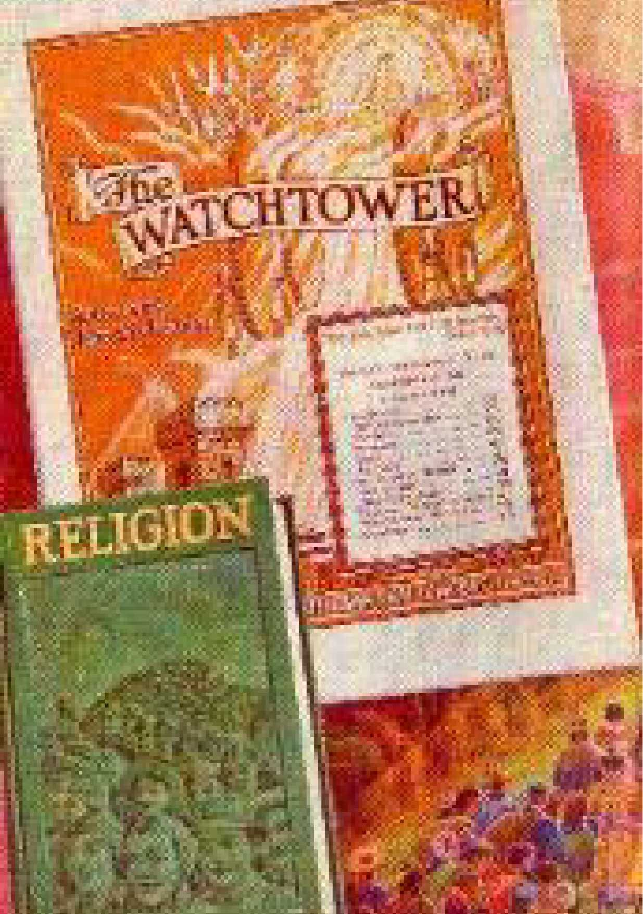

THEOCRACY - this is the biggest world issue today, over which, shortly, the final war of Armageddon shall be fought. All peoples of all nations are now being divided over this issue. In order that persons of good-will may understand The Theocratic Government and may take their stand on the side that means life, peace and joy to them, this booklet by Judge Rutherford is published.
The Theocracy is the only place of refuge for distressed humanity. It is the only hope of mankind. It is therefore in your interest to read this booklet.
-THE PUBLISHERS
THEOCRACY By J. F. RUTHERFORD
FIRST PRINTING 5, 000, 000 copies
U. S. A. COPYRIGHT, 1941, AND PUBLISHED BY WATCH TOWER BIBLE AND TRACT SOCIETY. International Bible Students Association
34 Craven Terrace, London, W. 2
OTHER OFFICES:
Brooklyn, Buenos Aires, Strathfield, Cape Town, Berne, Copenhagen, Mexico City, Manila, Bombay, Oslo, and other cities.
Made in Great Britain
Theocracy
WHAT is THE THEOCRACY? What kind of persons advocate THE THEOCRACY? What good will THE THEOCRACY render to the people?
Jehovah's government of the world by Christ Jesus, His King and Executive Officer, is THE THEOCRACY. No human eye will ever behold Jehovah God, because he is spirit. Christ Jesus, the King, is the "express image" of Jehovah, the Most High, and is likewise for ever invisible to human eyes. Christ Jesus is the Vindicator of Jehovah's name and carries out the orders of Almighty God. Concerning this it is written in the Scriptures: "Which in his times he shall shew, who is the blessed and only Potentate, the King of kings, and Lord of lords; who only hath immortality, dwelling in the light which no man can approach unto; whom no man hath seen, nor can see; to whom be honour and power everlasting. Amen." -1 Timothy 6: 15, 16.
For many centuries Satan the Devil has operated as the invisible ruler of the nations of the earth. "When the wicked beareth rule, the people mourn." (Proverbs 29: 2) The mourning of the people of all nations today is the result of the rule of the wicked one Satan. THE THEOCRACY will destroy that wicked rule and in its stead set up a righteous government. There will be visible men who will perform the office of governors and who will carry out expressly the will of Almighty God for the good of the people.
For centuries Jehovah, the Almighty God, communicated to his people through his holy prophets, whom he commissioned and inspired to speak his truth. Then he sent his beloved Son, Christ Jesus, to speak for him and to execute his purposes in the earth: "God, who at sundry times and in divers manners spake in time past unto the fathers by the prophets, hath in these last days spoken unto us by his Son, whom he hath appointed heir of all things, by whom also he made the worlds; who being the brightness of his glory, and the express image of his person, and upholding all things by the word of his power, when he had by himself purged our sins, sat down on the right hand of the Majesty on high; being made so much better than the angels, as he hath by inheritance obtained a more excellent name than they." (Hebrews 1: 1-4) Unto Jesus the Almighty has committed "all power... in heaven and in earth," and given him authority to execute such power. (Matthew 28: 18) Christ Jesus was anointed as King at the time he was immersed in the Jordan river. He was anointed by the spirit of Jehovah. (Matthew 3: 16, 17) To Christ Jesus, the King, was then committed the judgment of the world and of men: "For the Father judgeth no man, but hath committed all judgment unto the Son; and hath given him authority to execute judgment also, because he is the Son of man." -John 5: 22, 27.
The Holy Scriptures, contained in the book known as The Bible, were written by men entirely devoted to Almighty God, and which men were inspired and moved by the spirit of Almighty God to record what is there written: "For the prophecy came not in old time by the will of man; but holy men of God spake as they were moved by the holy ghost [holy spirit(R.V.)]." (2 Peter 1: 21) "All scripture is given by inspiration of God, and is profitable for doctrine, for reproof, for correction, for instruction in righteousness; that the man of God may be perfect, throughly furnished unto all good works." -2 Timothy 3: 16, 17.
The "man of God" is any man who sincerely desires to know God and to be obedient to God's commandments and who is then diligent to learn his commandments and to honor the name of the Most High by being diligent in obedience to his commandments to make known the name and the kingdom of Jehovah. To such a man the Bible, which is God's Word of truth, is a perfect and sure guide; and therefore in the language of the psalmist he says: "Thy word is a lamp unto my feet, and a light unto my path." -Psalm 119: 105.
To the man who is diligent to learn and to go in the right way the Almighty God says: "The meek will he guide in judgment, and the meek will he teach his way." (Psalm 25: 9) "I will instruct thee, and teach thee in the way which thou shalt go: I will guide thee with mine eye." (Psalm 32: 8) "Trust in the Lord with all thine heart; and lean not unto thine own understanding. In all thy ways acknowledge him, and he shall direct thy paths." (Proverbs 3: 5, 6) To such devoted person God makes it possible for him to have an understanding of the Scriptures, and these scriptures thoroughly equip such man to be the servant of the Most High.
The Word of Almighty God is always right and true: "For the word of the Lord is right; and all his works are done in truth." (Psalm 33: 4) The "man of God" desires at all times the truth. For that reason the Holy Scriptures, set out in The Bible, constitute the authority here cited and which shows the reason for the existence and the work of Jehovah's witnesses. This testimony is here set out in order that all persons who desire to know him have an opportunity to understand why a certain class of persons now on the earth are designated as "Jehovah's witnesses," and why such persons are engaged in a specific work at this time and are opposed so vigorously by others.
The "man of God" continuously has this prayer in his heart: "Withhold not thou thy tender mercies from me, O Lord; let thy lovingkindness and thy truth continually preserve me." (Psalm 40: 11) Thus praying, he diligently puts forth an endeavor to know the truth and serve the truth. Truth never fails, and in due time must triumph. "For the Lord is good, his mercy is everlasting; and his truth endureth to all generations." (Psalm 100: 5) "Thy righteousness is an everlasting righteousness, and thy law is the truth. Thou art near, O Lord; and all thy commandments are truth." -Psalm 119: 142, 151.
The Supreme One is God, who is the Almighty. He is the Father, hence the Life-giver to all who receive life and the right to life. To Abraham God said: "I am the Almighty God." (Genesis 17: 1) "From everlasting to everlasting, thou art God." (Psalm 90: 2) The name Jehovah belongs to the Almighty God and to none other, and therefore it is written: "That men may know that thou, whose name alone is JEHOVAH, art the Most High over all the earth." (Psalm 83: 18) Being the Most High and the Almighty, there resides in him supreme power. His will is the perfect law by which the man of God must be guided, and, if he is thus guided, in due time he shall receive life everlasting.
Jesus is the Son of the Almighty God. There are others who are called "gods," or mighty ones, but to those who love righteousness there is but one Almighty God; as it is written: "But to us there is but one God, and one Lord Jesus Christ, by whom are all things, and we by him." (1 Corinthians 8: 6) Jehovah is the Father of the Lord and Savior Jesus Christ. (2 Corinthians 11: 31) Jesus is the beloved and only begotten Son of the Almighty God, whom the Almighty, the Father, sent to earth to represent him and to declare his truth. (John 3: 16, 17) Because of complete obedience of Jesus, the Son, in carrying out the will of his Father, Jehovah, he, the Lord Jesus, is commissioned and honored and exalted by Jehovah God above all and next to the Father himself: "Thou lovest righteousness, and hatest wickedness; therefore God, thy God, hath anointed thee with the oil of gladness above thy fellows." -Psalm 45: 7.
The Almighty God Jehovah is the Creator of heaven and earth, and all things of the earth and of heaven rightfully belong to him. (Psalm 24: 1) His throne of authority is in heaven. Thus saith Jehovah: "The heaven is my throne, and the earth is my footstool." (Isaiah 66: 1) He is without beginning and without end. He is the "I AM"; that is to say, he was not from some time past, but his existence is without reference to time: "And Moses said unto God, Behold, when I come unto the children of Israel, and shall say unto them, The God of your fathers hath sent me unto you; and they shall say to me, What is his name? what shall I say unto them? And God said unto Moses, I AM THAT I AM: and he said, Thus shalt thou say unto the children of Israel, I AM hath sent me unto you." -Exodus 3: 13, 14.
He is the Life-giver, or Father, to all those who love righteousness. He is the Giver of every good and perfect gift: "Every good gift and every perfect gift is from above, and cometh down from the Father of lights, with whom is no variableness, neither shadow of turning." (James 1: 17) Every creature, whether spirit or human, that lives everlastingly, must receive his life and right to life from the Almighty, Jehovah God.
The Son of God, Christ Jesus, was from the beginning known by the name Logos (according to the Greek). He is 'the beginning of God's creation, ' and thereafter everything that was made was made by Jehovah by and through Christ Jesus. (John 1: 1-3; Revelation 3: 14) He is the official representative of Jehovah, the Most High, and the one who carries into action Jehovah's purposes. God, the Father, sent his beloved Son to earth to here perform his purposes. He was made flesh and dwelt amongst men: "And the Word was made flesh, and dwelt among us, (and we beheld his glory, the glory as of the only begotten of the Father, ) full of grace and truth." (John 1: 14) The man Jesus bore testimony before others, saying this: "My meat is to do the will of him that sent me, and to finish his work." (John 4: 34) "But I have greater witness than that of John; for the works which the Father hath given me to finish, the same works that I do, bear witness of me, that the Father hath sent me." (John 5: 36) "For I came down from heaven, not to do mine own will, but the will of him that sent me. And this is the Father's will which hath sent me, that of all which he hath given me I should lose nothing, but should raise it up again at the last day. And this is the will of him that sent me, that every one which seeth the Son, and believeth on him, may have everlasting life; and I will raise him up at the last day." (John 6: 38-40). "I can of mine own self do nothing: as I hear, I judge: and my judgment is just; because I seek not mine own will, but the will of the Father which hath sent me." (John 5: 30) Thus is shown complete unity of the Father and of the Son, that is to say, oneness or unity in the accomplishment of the purpose of Almighty God. Therefore Jesus said: "I and my Father are one." (John 10: 30) The Father and the Son are not "one in person," but are in full and complete unity and harmony of action. This is further shown by the scripture, to wit: "For the wages of sin is death; but the gift of God is eternal life, through Jesus Christ our Lord." (Romans 6: 23) Jehovah God is the Life-giver, and that life thus given is administered by his beloved Son, Christ Jesus: "For there is one God, and one mediator between God and men, the man Christ Jesus." -1 Timothy 2: 5.
The commission of Jesus is his authority, received from his Father Jehovah, to do and perform the will of the Almighty God. The commission of Jesus is his authority to act, and includes (1) the vindication of his Father's name; (2) the redemption and deliverance of those of mankind who believe on God and Christ, and who are obedient to God's will; and (3) to set up the kingdom of Almighty God by and through which he accomplishes and completes his commission.
The name of Jehovah God is glorious above all creation. For many centuries before the coming of Jesus to earth the Devil had reproached the name of Jehovah, the Most High God, and had caused many creatures to blaspheme Jehovah's name. The Devil had challenged Jehovah to put any creature on earth who would not blaspheme and reproach God's name. To the Devil Jehovah therefore said: ' For this cause have I permitted thee to remain; to shew thee my power, and that my name may be declared throughout all the earth. ' (Exodus 9: 16, Leeser) "0 God, how long shall the adversary reproach? shall the enemy blaspheme thy name for ever? Remember this, that the enemy hath reproached, O Lord, and that the foolish people have blasphemed thy name." -Psalm 74: 10, 18.
The vengeance of God upon his enemies results in the complete vindication of God's holy name, demonstrating to all that Jehovah is the Almighty; that justice is the foundation of his throne; that he is perfect in wisdom and that he is holy, unselfish, and therefore God is love. To Almighty God belongs vengeance or vindication: "To me belongeth vengeance, and recompence; their foot shall slide in due time; for the day of their calamity is at hand, and the things that shall come upon them make haste. If I whet my glittering sword, and mine hand take hold on judgment, I will render vengeance to mine enemies, and will reward them that hate me. Rejoice, O ye nations, with his people; for he will avenge the blood of his servants, and will render vengeance to his adversaries, and will be merciful unto his land, and to his people." -Deuteronomy 32: 35, 41, 43.
It is the will of Almighty God that his holy name shall be exalted and that every creature that breathes shall in due time praise the name of the Most High: "Let every thing that hath breath praise the Lord. Praise ye the Lord." (Psalm 150: 6) "Be still, and know that I am God; I will be exalted among the heathen, I will be exalted in the earth." -Psalm 46: 10.
Those who have blasphemed and reproached Jehovah's name shall be brought low, but the name of Jehovah shall be exalted. (Isaiah 2: 11, 17) Such is the purpose and will of Jehovah, the Almighty God, which purpose will be carried out in due time and executed by the Beloved Son.
The Son Jesus came to do the will of his Father, who sent him, and therefore the Beloved Son says: "Then said I, Lo, I come; in the volume of the book it is written of me, I delight to do thy will, O my God; yea, thy law is within my heart." (Psalm 40: 7, 8) Concerning him it is further written: "Wherefore, when he cometh into the world, he saith, Sacrifice and offering thou wouldest not, but a body hast thou prepared me. In burnt offerings and sacrifices for sin thou hast had no pleasure: then said I, Lo, I come (in the volume of the book it is written of me) to do thy will, O God. Above, when he said, Sacrifice and offering and burnt offerings and offering for sin thou wouldest not, neither hadst pleasure therein; which are offered by the law; then said he, Lo, I come to do thy will, O God." (Hebrews 10: 5-9) Christ Jesus will carry out his commission and will fully Vindicate his Father's name.
As a secondary purpose, as provided in his commission of authority, Jesus was sent by his Father to purchase and deliver obedient men from death. Upon all men fell condemnation of death by reason of the sin of the first man; and by the obedience of Christ Jesus in the performance of his Father's will the way of redemption, deliverance and blessing is opened to mankind. (Romans 5: 12, 18, 19; John 3: 16, 17) It is by the kingdom of God, which is THE THEOCRACY that the purpose of Jehovah God shall be accomplished by and through Christ Jesus, his Executive Officer. It is the man Christ Jesus who by his own lifeblood furnishes the purchase price for the human race. It is the resurrected spirit, Christ Jesus, who saves and delivers from death all of the human race that believe on and obey him and his Father, Jehovah. To accomplish this ransom or redemption of men Jesus must die as a man and be resurrected as a spirit, and then carry out the purpose of Jehovah. He was therefore put to death as a man, and God raised Jesus out of death a spirit creature who lives for evermore. (1 Peter 3: 18; Acts 2: 24, 36) After his resurrection and ascension into heaven Christ Jesus spoke to his servant John these words: "I am he that liveth, and was dead; and, behold, I am alive for evermore, Amen; and have the keys of hell and of death." -Revelation 1: 18.
Before Christ Jesus could set up the Kingdom and reign as King, and before he could vindicate his Father's name, he must first die and be raised out of death, then receive his kingdom, and in his Father's due time begin the reign as King. Therefore, Jesus said to his disciples: "In my Father's house are many mansions; if it were not so, I would have told you. I go to prepare a place for you. And if I go and prepare a place for you, I will come again, and receive you unto myself; that where I am, there ye may be also." (John 14: 2, 3) Furthermore to his disciples he said: "Ye are they which have continued with me in my temptations. And I appoint unto you a kingdom, as my Father hath appointed unto me." (Luke 22: 28, 29) Concerning the man Jesus and his death, resurrection and exaltation it is written: "But made himself of no reputation, and took upon him the form of a servant, and was made in the likeness of men; and being found in fashion as a man, he humbled himself, and became obedient unto death, even the death of the cross Wherefore God also hath highly exalted him, and given him a name which is above every name: that at the name of Jesus every knee should bow, of things in heaven, and things in earth, and things under the earth; and that every tongue should confess that Jesus Christ is Lord, to
the glory of God the Father." -Philippians 2: 7-11.
When he ascended on high he did not immediately begin his reign, but must wait until God's due time for him to take his great power and reign; therefore it is written: "The LORD said unto my Lord, Sit thou at my right hand, until I make thine enemies thy foot-stool." (Psalm 110: 1; Hebrews 10: 12, 13) A long period of time must elapse and has elapsed from the time of the resurrection and ascension of Christ Jesus into heaven and until his coming and the beginning of his reign as King of THE THEOCRACY.
The man Jesus when on earth must give testimony to those who would hear of and concerning the great fundamental truths set out in the foregoing Scriptural quotations. He must make known the purpose of his coming to earth as a man. To the governor then acting in Palestine Jesus said: 'I am a king. To this end was I born, and for this cause came I into the world, that I might bear testimony to the truth; and everyone who is of the truth heareth my voice. ' (John 18: 37) At the same time he stated: "My kingdom is not of this world; if my kingdom were of this world, then would my servants fight, that I should not be delivered to the Jews; but now is my kingdom not from hence." (John 18: 36) It therefore follows that "this world" must come to an end before The THEOCRATIC GOVERNMENT could be put into operation. The commission of Jesus, therefore, required him while on earth to be a witness to the truth and to testify to the truth according to his Father's will, that those who desire to hear might learn the truth.
"Disciples" means those who are willing learners. The testimony of Jesus was received by the faithful disciples, whom he thereafter appointed and commissioned as his apostles and witnesses. He sent them forth and commanded and commissioned them to bear testimony to the people and to instruct the people that Jehovah is the Almighty God; that Christ Jesus is the beloved Son of Jehovah God; that by the blood of the obedient Son, Christ Jesus, the human race is purchased and redeemed and delivered; that the name of Jehovah God must be and shall be vindicated; and that at the second coming of Christ Jesus all of this would be accomplished by and through the Kingdom, or THE THEOCRACY. Therefore he taught his apostles, and all of his followers, to look for the coining and the establishment of The THEOCRATIC GOVERNMENT and to always pray to Jehovah for the coming of that Kingdom. -Matthew 6: 10.
From the time of the baptism of Christ Jesus to the end of his earthly existence the faithful apostles were taught by him, and from that time, as long as the apostles were on earth, they gave testimony before the people of and concerning the purpose of Jehovah, which in due time shall be accomplished by and through Christ Jesus the King. In all the testimony of those faithful apostles the fact of the coming of Christ Jesus to his kingdom was emphasized. Some of the testimony concerning his coming and his kingdom is as follows: 'We, however, are free citizens of heaven, and we are waiting with longing expectation for the coming from heaven of a Saviour, the Lord Jesus Christ, who, in the exercise of the power which He has even to subject all things to Himself, will transform this body of our humiliation until it resembles the body of His glory. ' (Philippians 3: 20, 21, Weymouth; Am. Rev. Ver. ) "I charge thee therefore before God, and the Lord Jesus Christ, who shall judge the quick and the dead at his appearing and his kingdom." -2 Timothy 4: 1.
That all faithful followers of Christ Jesus must continue to bear testimony to the name of Jehovah and to his THEOCRATIC GOVERNMENT this further admonition was given to them, as it is written -. "Preach the word; be instant in season, out of season; reprove, rebuke, exhort, with all long suffering and doctrine. For the time will come when they will not endure sound doctrine; but after their own lusts shall they heap to themselves teachers, having itching ears; and they shall turn away their ears from the truth, and shall be turned unto fables. But watch thou in all things, endure afflictions, do the work of an evangelist, make full proof of thy ministry. For I am now ready to be offered, and the time of my departure is at hand. I have fought a good fight, I have finished my course, I have kept the faith; henceforth there is laid up for me a crown of righteousness, which the Lord, the righteous judge, shall give me at that day; and not to me only, but unto all them also that love his appearing." -2 Timothy 4: 2-8.
To all of his obedient followers Christ Jesus gives this admonition: "Watch therefore; for ye know not what hour your Lord doth come. Therefore be ye also ready; for in such an hour as ye think not, the Son of man cometh." (Matthew 24: 42, 44) From the days of the apostles up to this very hour there have been a small number of faithful men and women who at all times have been diligent in their endeavours to live and to act in ' harmony with the foregoing admonition, that is, to bear testimony to others of Jehovah God, of Christ his King, and of the Kingdom. These have earnestly waited and looked and prayed for the coming of Christ and his kingdom.
These are days in which corporations are organised and operated to perpetuate title to personal and real property and to carry out a fixed purpose of men, without reference to the duration of life of men. Corporations are organized and employed by followers of Christ Jesus for the purpose aforementioned. In 1884 a corporation was created and organised under the laws of the State of Pennsylvania under the name and title of Zion's Watch Tower Tract Society, the name of which corporation was later changed to WATCH TOWER BIBLE & TRACT SOCIETY. The purpose of that corporation, as stated in its charter, is as follows, to wit:
"The purpose for which the corporation is formed is, the dissemination of Bible truths in various languages by means of the publication of tracts, pamphlets, papers and other religious documents, and by the use of all other lawful means which its Board of Directors, duly constituted, shall deem expedient for the furtherance of the purpose stated."
In 1914 a like corporation was created and organized under the laws of Great Britain under the name and title of INTERNATIONAL BIBLE STUDENTS ASSOCIATION, and the purpose of that corporation is identical with that of the other one above mentioned. These corporations are one, in this, that they are dedicated to the same use and work. Together they act as printers and manufacturers of books, magazines and other literature for that body of Christian people throughout the earth who are witnesses of Jehovah God and his kingdom. Such witnesses are the followers of Christ Jesus and, in obedience to his commandments and by his authority and commission from Jehovah God, they preach or proclaim the gospel of THE THEOCRACY and hence are:
Charles Taze Russell was the prime mover in the formation and organization of the corporations above named. Of course, other persons, as the law of the land requires, joined with him in the formation of such corporations. Charles T. Russell, better known as Pastor Russell, was and is a Christian, following in the footsteps of Christ Jesus and fully devoted to Jehovah God. On October 31, 1916, he finished his earthly course. He was faithful unto death in his devotion to God and to His kingdom. He devoted his all to the service of God and Christ. He was loved by all persons knowing him, who loved and served Jehovah God, and was hated by those who were unfaithful to God and who hate God and his kingdom. Like other faithful Christians, he was hated for the name of the Lord.
Some persons who do not understand, and also others who are enemies of the kingdom of God, claim and state that the body of Christians known and designated as Jehovah's witnesses now on the earth have in recent years ignored their founder, Pastor Russell, and have formed a cult or sect and have named themselves Jehovah's witnesses. That conclusion and statement so published by the aforementioned persons is without truth and fact, being wholly false.
A "cult" is a system of religious belief, ceremonies and practices indulged in and practiced by an organised body of persons.
A "sect" is a religious organisation of persons who follow a particular leader in their belief and practice of a specific religion.
"Blasphemy" consists of an indignity offered to Almighty God in words, in writing or in signs. The act of claiming the prerogative of God and that which belongs alone to Almighty God, Jehovah, is blasphemy.
"Religion" is doing anything contrary to the will of Almighty God.
"Christianity" means to joyfully do the will of Almighty God as He has commanded; and because the Lord Jesus Christ always does the will of God gladly, all his followers are properly called "Christians." These definitions are proper and correct.
Pastor Russell was the general organizer of the corporations above named, but he was not in any sense the founder or organizer of Jehovah's witnesses. The claim that any man is the founder or organizer of Jehovah's witnesses is blasphemy, for the obvious reason that it is the prerogative solely of Jehovah God to select and organize his own witnesses and no man has any authority whatsoever to select or organize them.
Jehovah's witnesses could not be a cult or sect of religionists, because Jehovah God expressly denounces religion as a snare of the Devil, employed to deceive and to entrap men and to turn them away from God. -Deuteronomy 7: 16.
Religion originated with the Devil and has been used by the Devil at all times since to deceive the people and to turn them away from the worship of Almighty God.
Who, then, are Jehovah's witnesses? and by whom are they selected and organized to perform their duties and carry on their work? They are made up of persons who are entirely devoted to Jehovah God and his kingdom and who are diligent and faithful in carrying out his orders as commanded by the Most High. They are selected or chosen by Almighty Jehovah God. No man could select them. Concerning such it is written: "But ye are a chosen generation, a royal priesthood, an holy nation, a peculiar people; that ye should shew forth the praises of him who hath called you out of darkness into his marvellous light: which in time past were not a people, but are now the people of God; which had not obtained mercy, but now have obtained mercy." -1 Peter 2: 9, 10.
The chief witness of Jehovah God, the Head over all of his witnesses, is the Logos, Christ Jesus, the Lord, Saviour, and King of THE THEOCRACY. One of his official titles is "The Faithful and True Witness." -Revelation 1: 5; 3: 14.
The first man who was selected as a witness of Jehovah God from amongst men was Abel, who faithfully obeyed Almighty God and received God's approval, (Genesis 4: 4) His brother Cain was a religionist, the murderer of Abel, and was cursed by Jehovah. (Genesis 4: 5-12) "By faith Abel offered unto God a more excellent sacrifice than Cain, by which he [Abel] obtained [the] witness that he was righteous." -Hebrews 11:4.
From the time of Abel onward Jehovah God continued to select his witnesses from amongst men. The next name appearing amongst those selected was Enoch, who "pleased God." The Scriptures then add: "Without faith it is impossible to please [God]." (Hebrews 11: 5, 6} Such of necessity means that God would never select any man as his witness who is without faith or who is unfaithful. God then selected and gave approval to Noah as one of his witnesses. Noah was joyfully obedient to the will of Almighty God, "a preacher of righteousness," and whose testimony was a rebuke to the religious practitioners, all of whom were destroyed in the flood.
Jehovah then mentions Abraham, whom he calls His "friend." To Abraham he gave promise that in due time blessings should come to all the families of the earth who would be obedient to Him. Because Abraham was faithfully obedient to the will of God he received the approval of the Most High and is designated as one of Jehovah's witnesses. Concerning Abraham it is recorded in the Bible: "For he looked for a city [organization or kingdom of Almighty God] which hath foundations, whose builder and maker is God." -Hebrews 11: 10
Favourable mention and approval is also made in the Scriptures of Sarah, Isaac, and Jacob, all of whom received God's commendation and approval, "and who by faith devoted themselves to God and set their hopes and affections upon THE THEOCRATIC GOVERNMENT, and, as it is written: "Wherefore God is not ashamed to be called their God; for he hath prepared for them a city [a place in The THEOCRATIC GOVERNMENT]. "Jehovah also selected and mentioned with his approval as his witnesses Joseph, Moses, Rahab, Gideon, Barak, Samson, David, Samuel, and all the faithful prophets, which includes those from Moses to John the Baptist. Jehovah God selected them as his witnesses, and they were all faithful to their appointment and commission. All of them suffered great persecution at the hands of religionists, and of and concerning them it is written in the Bible: "Of whom the world was not worthy." All of them received the commendation and approval of Jehovah God. (Hebrews 11: 4-40) Those faithful "witnesses of Jehovah who bore testimony to the name of Jehovah and his kingdom have the promise of the Almighty God that they shall be resurrected from death and made the visible princes or governors in the earth under the great Theocratic King, Christ Jesus," (Psalm 45: 16) They shall rule under the great and righteous King, Christ Jesus; as it is written: "Behold, a king shall reign in righteousness, and princes shall rule in judgment." (Isaiah 32: 1) Then the people will rejoice. That will be in great contrast to the present-day rule of dictators and ambitious politicians: "When the righteous are in authority, the people rejoice; but when the wicked beareth rule, the people mourn." -Proverbs 29: 2.
Christ Jesus, the great true and faithful Witness of Jehovah, when on earth, at all times, and on repeated occasions, emphasized the importance of the Kingdom. His speech and teachings publicly and otherwise were at all times concerning THE THEOCRACY. To all his followers he gave admonition that they should continuously pray to Jehovah God: "But when ye pray, use not vain repetitions, as the heathen [religionists, who use vain repetitions and constantly finger their beads, thinking they shall be heard and answered] do; for they think that they shall be heard for their much speaking." Continuing, Jesus said: "Be not ye therefore like unto them; for your Father knoweth what things ye have need of before ye ask him. After this manner therefore pray ye: Our Father which art in heaven, Hallowed be thy name. Thy kingdom come. Thy will be done in earth, as it is in heaven.
(Matthew 6; 7-10). This further shows that the coming establishment of The THEOCRATIC GOVERNMENT is the great and important purpose of Jehovah, and which must be carried out by Christ Jesus the King.
The faithful apostles of Jesus Christ were selected by Jehovah and given to Jesus as witnesses of Jehovah. For three and one-half years Jesus had continuously given testimony to the name and kingdom of Jehovah God and had instructed his disciples whom God had chosen and given to him. When he had finished his earthly work he addressed himself to Jehovah his Father in these words: "I have manifested thy name unto the men which thou gavest me out, of the world; thine they were, and thou gavest them me; and they have kept thy word. Now they have known that all things whatsoever thou hast given me are of thee." -John 17: 6, 7.
From the days of the apostles forward Jehovah continued to select his witnesses to bear testimony to his name and his kingdom in the earth. Those proving faithful God assigns to a place in "the body" or organization of Christ Jesus; and concerning such it is written: "But now hath God set the members every one of them in the body, as it hath pleased him." (1 Corinthians 12: 18) This is conclusive proof that Jehovah's witnesses are those, and those only, whom God selects, and whom no man can select.
Fully aware of God's purpose to have his witnesses in the earth, and after reviewing the selection of these witnesses by Jehovah God from Abel to John the Baptist, and after calling attention to Christ Jesus, the great "FAITHFUL AND TRUE WITNESS," the faithful apostle Paul, also one of Jehovah's witnesses, selected by Jehovah God and under inspiration of God, gives this admonition to all persons who enter into a covenant to be fully obedient unto Jehovah God and his kingdom, to wit: "Wherefore seeing we also are compassed about with so great a cloud of witnesses, let us lay aside every weight, and the sin which doth so easily beset us, and let us run with patience the race that is set before us, looking unto Jesus the author and finisher of our faith; who, for the joy that was set before him, endured the cross, despising the shame, and is set down at the right hand of the throne of God. For consider him that endured such contradiction of sinners against himself, lest ye be wearied and faint in your minds." (Hebrews 12: 1-3) This is further and corroborative proof that Jehovah's covenant people, selected and anointed by him, are his witnesses, and not subject to the orders of men contrary to God's will.
In the light of the foregoing Scriptural testimony it must be admitted by all sincere persons that it would be blasphemy to claim that any man is the founder and organiser of Jehovah's witnesses. It is offering an indignity to Almighty God to designate his witnesses as "a sect or cult."
As further evidence as to who constitute Jehovah's witnesses, and who selects them, note the following Scriptural proof. In this present day all the world is under religious influence or demonism. There are numerous religious organizations operating with other political rulers and gangsters, together claiming the right to rule the earth, which claim constitutes blasphemy of the name of Jehovah God and his King. Divers remedies are offered to the people by these nations and their rulers, each offered remedy claiming that such respective remedy would bring about a satisfactory condition to the people. All of them deny God and Christ and are opposed to The THEOCRATIC GOVERNMENT. Are they justified in their claims and the position they take?. Jehovah speaks and says: "Let all the nations be gathered together, and let the people be assembled; who among them can declare this, and shew us former things? let them bring forth their witnesses, that they may be justified; or let them hear, and say, It is truth." (Isaiah 43: 9) Otherwise stated, God commands that the religionists justify themselves by their testimony or else admit that they are wrong and then accept the truth. Then addressing those who have covenanted to do the will of God and who have devoted themselves unconditionally to the great THEOCRACY, Jehovah says: "Ye are my witnesses, saith the Lord, and my servant whom I have chosen; that ye may know and believe me, and understand that I am he; before me there was no God formed, neither shall there be after me. I, even I, am the Lord; and beside me there is no saviour. I have declared, and have saved, and I have shewed, when there was no strange god among you; therefore ye are my witnesses saith the Lord, that I am God." -Isaiah 43: 10-12.
What must a person do in order to put himself in line to be selected by Jehovah as one of his witnesses? He must believe or have faith that Jehovah is the only true and almighty God, and that Christ Jesus, the beloved Son of God, is man's redeemer. "Without faith it is impossible to please [God]; for he that cometh to God must believe that he is, and that he is a rewarder of them that diligently seek him." (Hebrews 11: 6) To all such as have a sincere desire to be followers of Christ Jesus, and hence servants of God, Jesus says: "If any man will come after me, let him deny himself, and take up his cross, and follow me," (Matthew 16: 24) Obeying these injunctions, the person unconditionally agrees to do the will of God, and that means his consecration of himself to do whatsoever the Lord's commandments direct him to do. The will of God concerning all such persons is stated in the Bible, and therefore the Scriptures constitute the guide for the Christian. To 'deny oneself, as Jesus directs, means that the person must put aside his own selfish will and determine to be guided by the will of God. If God accepts the consecration of that person, he begets him, that is to say, he acknowledges that person to be his servant and son for his purpose: "Of his own will begat he us with the word of truth, that we should be a kind of firstfruits of his creatures." (James 1: 18} Thus Jehovah God accepts that person or selects him to be his servant, and from that time forward that servant is in a covenant to do the will of God, even as Jesus likewise does the will of his Father. (Ps. 40: 8) The servant is called to follow where Christ Jesus, the Master, leads: "For even hereunto were ye called; because Christ also suffered for us, leaving us an example, that ye should follow his steps." -1 Peter 2: 21.
How may the servant or person know that he is in a covenant to do God's will? The spirit of God reveals it to him; as it is written: "The spirit itself beareth witness with our spirit, that we are the children of God." (Romans 8: 16) Does that consecrated person need some other person, some man, to tell him whether he is a follower of Christ Jesus or not? No; because it is an individual matter between the creature and the Lord as to whether or not that person is in a covenant with God and has been accepted by the Lord. The person judges himself by the fixed rule of God, which never changes, and if he is the servant of God the spirit of God enlightens his mind and instructs him. Says the Lord God to such chosen ones: "I will instruct thee, and teach thee in the way which thou shalt go; I will guide thee with mine eye." (Psalm 32: 8) For that reason it is absolutely necessary for the creature thus consecrating himself to carefully study the Word of God that he may be informed as to God's will concerning him. God anoints his selected or "elect" ones by his spirit: "But the anointing which ye have received of him abideth in you, and ye need not that any man teach you; but as the same anointing teacheth you of all things, and is truth, and is no lie, and even as it hath taught you, ye shall abide in him." -1 John 2: 27.
For what purpose does God select his servants? In order that such persons so selected may be witnesses to the name and kingdom of Jehovah God. It is written: "God at the first did visit the Gentiles [non-Jews], to take out of them a people for his name." (Acts 15: 14) Those who are selected by the Lord God must thereafter be witnesses to the name of Jehovah, the Almighty God, and to his. kingdom. His name has been reproached for centuries, his name must be vindicated, and Jehovah commands that a witness concerning his name must be given before that day of vindication, The consecrated person who is selected as Jehovah's witness must therefore proclaim His name and purpose to others. (Exodus 9: 16) He must become a "preacher of righteousness"; which means that he must proclaim to those who will hear the Word and purpose of Jehovah God, who is righteous. He must proclaim God's truth, and not the teachings or traditions of men. To do so he receives authority from the Lord, and is responsible to the Lord God for what he does or fails to do.
To be ordained means to be appointed by the proper authority to a position or office to perform the duties specifically assigned Jehovah's witnesses being selected by Jehovah, it follows that Jehovah is the authority that ordains the servant. Therefore it is written: "The spirit of the Lord God is upon me; because the Lord hath anointed me to preach good tidings unto the meek; he hath sent me to bind up the brokenhearted, to proclaim liberty to the captives, and the opening of the prison to them that are bound; to proclaim the acceptable year of the Lord, and the day of vengeance of our God; to comfort all that mourn." -Isaiah 61: 1, 2.
That scripture states the commission of authority given by the Lord God to those persons who are selected by him and made his witnesses. Thereafter such persons must be obedient to God's commandments; as it is written: 'Obedience is better than sacrifice. ' (1 Samuel 15; 22) "Study to shew thyself approved unto God," and not unto man. (2 Timothy 2: 15) As the follower in the footsteps of Jesus Christ such person must be obedient to the commandments of the Lord and thereby prove his integrity toward Almighty God. His eternal existence now depends upon full obedience to God's commandments. To such persons the rule is announced by the Lord: "Be thou faithful unto death, and I will give thee the crown of life," (Revelation 2: 10, A. R. V. ) As Christ Jesus, when on the earth, continuously proclaimed the name and kingdom of Jehovah, so all his followers must proclaim the name and kingdom of Jehovah in order that they may prove their integrity.
The body of Christians now on the earth and known as Jehovah's witnesses are a united body, operating together as one, that is, in full unity. (Ephesians 4: 13, 15) As a body of Christians following in the footsteps of Christ Jesus they carry forward their work harmoniously to the praise of Jehovah. To aid them in doing so and to work to the best advantage that body of Christians have the WATCH TOWER BIBLE AND TRACT SOCIETY to act for them and in their behalf. That Society carries forward the work of these Christians in an orderly manner. To each one who gives evidence that he is fully devoted to God and his kingdom and that he is wholly devoted to the service of God, in obedience to his commandments, the Society issues a paper or card of identification showing that such person is recognized by the body of Christians composing the Society as an ordained minister and servant of the Lord. This does not mean that no one else is an ordained minister who does not receive such card of identification. The real ordination comes from Jehovah God himself. Such card of identification is issued by the Society only to those who are the representatives of such Society. With such person the Society co-operates in the publication of the name of Jehovah God and of his kingdom.
In many cities, towns and communities throughout the earth classes or companies of Jehovah's witnesses are maintained and those companies or classes regularly meet, many times during the week, to engage in careful and prayerful study of the Bible; and to do so they use the publications of the WATCH TOWER BIBLE AND TRACT SOCIETY in order that they may study the Scriptures in an orderly way and get a better understanding of the will of God concerning them. Such persons are real students of the Scriptures and, being unselfishly devoted to THE THEOCRACY and guided by the spirit of the Lord, they learn the Scriptures and the meaning thereof. These study classes are led by elders, that is, by persons of the company who are more mature and are well qualified and apt to teach. Every person who loves righteousness and who desires to learn of God and of his kingdom is welcome to attend those studies and participate and receive instruction. Such schools of instruction of the Scriptures are held and conducted each and every week of the year, to the great profit of those who attend.
To "preach" means to proclaim a message. "Preaching the gospel of the kingdom of God" means the proclaiming to others the Scriptural truths of and concerning Jehovah God and his kingdom under Christ Jesus. Each and every one of Jehovah's witnesses commissioned as aforesaid is commanded to preach God's message of truth to all who will hear. Such is the means of bearing witness to the name and kingdom of Jehovah. They are not witnesses for any human organisation, but are witnesses for the Most High, the great THEOCRAT. Having received a commission from God to preach, and being commanded by him to preach, such consecrated persons must engage in preaching or proclaiming to others who will hear. That message delivered must be that which is proclaimed in the Scriptures, particularly with reference to the kingdom of Jehovah. They must preach or make known the good news in obedience to God's commandment, and when men attempt to prevent them from thus preaching they must follow the rule announced by the faithful apostles of Christ Jesus, to wit: "We ought to obey God rather than men." -Acts 5: 29.
The indisputable physical facts that have come to pass in this generation, taken together with the prophecies of Jehovah God written in the Bible and relating to the Kingdom, show beyond any question of doubt that the second coming of Christ Jesus to begin his reign as King took place in 1914, when he was enthroned and sent forth by Jehovah to begin that rule. (Psalm 110: 2; Revelation 11: 17, 18; Matthew 24: 1-25) The fulfilled prophecies show that the "world," or rule by Satan without interruption, came to an end in 1914 and from then Christ Jesus, the King of The THEOCRATIC GOVERNMENT, under authority from Jehovah God, is sent forth to rule and to completely oust Satan and all of his agents, and to establish righteousness in all the world. The coming of Christ Jesus the King has been the hope of Christian people for more than 1, 900 years, and his coming is good news or gospel to all who have a desire to see the will of God done on earth. To all such this commandment is given by the Lord: 'This gospel of the Kingdom shall be preached throughout the world, as a witness unto all nations; and then shall the end come. ' (Matthew 24: 14) In obedience to this commandment Jehovah's witnesses must engage in a campaign to advertise the King and his kingdom.
In obedience to this specific commandment from the Lord Jehovah's witnesses go from place to place and from house to house, calling upon the people and informing those who will hear of the good news that the kingdom of heaven is here. Unlike religious denominations, Who meet in houses and perform certain formal ceremonies, Jehovah's witnesses go to the people and talk with them. They take to the people books, booklets, magazines and other printed matter concerning the Scriptures which enable the people to find in the Scriptures the full arid complete proof of this good news and that the Kingdom is at hand, and thus the people are enabled to stay in their own homes and learn of God's gracious provision for them. Throughout all the earth where there are companies of Jehovah's witnesses each individual, as opportunity is afforded, engages in thus preaching this gospel of the Kingdom. The corporations above mentioned do the printing and manufacturing of such literature as is distributed and manage the witness work in an orderly manner. All this work is done without pecuniary profit to any person. Furthermore, persons who do engage in this, witness work contribute their own money to carry on the work. There is but one purpose in our lives, and that is to make known Jehovah's kingdom and the blessings it will bring to humankind.
Why is the name "Jehovah's witnesses" given to the body of Christian men engaged in preaching this gospel of THE THEOCRACY?
All true followers of Christ Jesus are Jehovah's witnesses, whether they are called that or not. Since the days of Jesus in the flesh and of his apostles, who walked with him, there have been some faithful followers of Christ Jesus on earth, and hence witnesses of Jehovah. Within a short time after the death of the apostles selfish and ambitious men amongst the Christians set about to organise denominations called "churches" or "church organisations." Immediately such organisations were presided over by the stronger and there were introduced and taught therein the doctrines and theories of men, and quickly the teachings of the Bible were greatly ignored. Such organisations or religious systems designated themselves as religious churches, and now they teach the doctrines or traditions of men, which is contrary to the will of God, and which traditions make the Scriptures of none effect. The Jews fell into a like error, and concerning such Jesus said to the leaders, to wit: "Thus have ye made the commandment of God of none effect by your tradition. Ye hypocrites! well did Esaias prophesy of you, saying, This people draweth nigh unto me with their mouth and honoureth me with their lips; but their heart is far from me. But in Vain they do worship me, teaching for doctrines the commandments of men. And he called the multitude, and said unto them, Hear, and understand." -Matthew 15: 6-10.
Even the apostle Paul had fallen into that error and followed traditions, until the Lord opened his mental understanding to the truth, and then he spurned religion as an enemy and thereafter followed Christ Jesus and taught the doctrines set forth in the Bible. Read carefully Galatians 1: 1-16.
The Catholic system of religion claims to be the official organisation of the Lord; but the Scriptures show that such claim is entirely without foundation and truth. The Catholic organisation was founded by men, and has never represented the Lord God or Christ Jesus. As a protest against the Catholic organisation and system of operations, many other organisations called "churches" were formed, and these have designated themselves as the "Protestant" religious organisations. As is well known, this condition has obtained over a period of many centuries. All such religious organisations have, as it appears, entirely forgotten about THE THEOCRACY. At least they fully ignore The THEOCRATIC GOVERNMENT, and none of them emphasize the kingdom of Jehovah God under Christ.
After the WATCH TOWER BIBLE AND TRACT SOCIETY was organised by Pastor Russell and his associated brethren in Christ, that Society stood out entirely separate and distinct from all church or religious denominations. Pastor Russell repeatedly by word of mouth and by his writings, pointed out that the denominational church systems are not Christian, and hence he called such organisations "churchianity" as contradistinguished from Christianity. Pastor Russell was a real Christian and therefore a witness of Jehovah, and the term "Jehovah's witness" properly applies to him; but that distinction had not been revealed clearly to Christians in his day.
"The end of the world," as aforestated, came in 1914, and that truth Pastor Russell for years previous had strongly emphasized. He died in the year 1916. In 1918 the Lord Jesus Christ came to the temple of Jehovah, that is to say, to the body of consecrated Christians whom he gathered unto himself, and whom he then put to a severe trial or test, as stated in Malachi 3: 1-3. The days that followed his coming to the temple and his judgment there were days of real testing. Many who claimed to be his followers turned back from following after the Lord. Others manifesting selfishness were not approved by him, and were set aside. Some who were wholly devoted to the Lord and were not followers of men were approved by the Lord and taken into the temple, that is, the Lord gathered them unto himself. The temple of God is not made with hands, but consists of the company or body of faithful followers of Christ Jesus. (1 Corinthians 3: 16; 2 Corinthians 6: 15-17) Those persons thus fully devoted to the Lord, and who were approved by him in his judgment, were gathered into the temple or to "the body" of his organisation, and to them the Lord committed "His goods," that is to say, Kingdom interests on earth, as stated by him in Matthew 24; 45-47. Those who fail in that judgment because of their wrong heart condition the Lord designates as the "evil servant." -Matthew 24: 48-51.
Although the temple judgment began in 1918, not until 1922 was it understood by the consecrated of earth that the Lord was at the temple. From that time forward the Lord began to reveal to his followers the meaning of prophecy, and all of the anointed now on earth can truly testify that since 1922 the Lord has continuously illuminated the prophecies, revealed the meaning, and made them understandable by his people, greatly to the joy of all his servants. They have therefore a clearer vision of God's Word, because it is his due time to reveal to them why the Lord has enabled the followers of Christ to have an understanding of the will of God, and to progress in the service of the Lord.
Pastor Russell never claimed to have any followers. It was not pleasing to him to have his brethren called "Russellites." Books which he wrote and published were called "Millennial Dawn," meaning the dawn of the thousandyear reign of Christ. Many persons thereafter called Pastor Russell and his brethren "Millennial Dawnites." After the organisation of the corporation INTERNATIONAL BIBLE STUDENTS ASSOCIATION that body of Christian people were generally called "International Bible Students." Pastor Russell never adopted any name for himself and his associates except that of Christian.
"Jehovah's witnesses," as hereinbefore stated, is a term which has always been applicable by Jehovah, to those who are fully devoted to Jehovah God and his service. Pastor Russell, because of his faithfulness to the Lord, was one of Jehovah's witnesses, but the meaning of many prophecies was not revealed in his day and hence not understood. While the facts show that from and after 1922 in particular the Lord gradually unfolded to his faithful servants the meaning of the prophecies, it was not until 1931 that the name of those fully devoted to Jehovah God and his King was properly understood to be "Jehovah's witnesses."
Religion has been confusing to Christian people for many centuries.
Religion brought about the confusion amongst those who were associated with Pastor Russell. Because of having been associated with religionists many things pertaining to religion clung to them until they had a better understanding of God's purpose. All of these things were foreknown by the Lord centuries ago: "Known unto God are all his works from the beginning of the world." -Acts 15: 18.
Jehovah is not the God of confusion, but the God of order; and when the time came for the gathering of his people to Christ Jesus at the temple, and the time to reveal to them his purpose, he began to set them in order by showing them what they must do. It was therefore to be expected that in due time he would make clear to his people their proper relationship to him. The appropriate time was after the coming of the Lord Jesus to the temple. Without doubt the Lord has directed the publication of The Watchtower. The Watchtower in 1931 published an article calling attention particularly to the following text, which applies to the servants of Almighty God who are faithfully performing their covenant, to wit: "For Zion's sake will I not hold my peace, and for Jerusalem's sake I will not rest, until the righteousness thereof go forth as brightness, and the salvation thereof as a lamp that burneth. And the Gentiles shall see thy righteousness, and all kings thy glory; and thou shalt be called by a new name, which the mouth of the Lord shall name." -Isaiah 62: 1, 2.
Zion is the name of God's organization of which Christ Jesus is the Head. It is written: "When the Lord shall build up Zion, he shall appear in his glory." (Psalm 102: 16) The building up of Zion began after 1918, and thereafter the glory of the Lord more fully continued to appear unto those devoted to him. Christ Jesus at the temple, having gathered unto himself his approved followers at the temple as stated above, shows that the foregoing text of Isaiah 62: 1, 2 applies to those gathered at the temple. That text states that these so gathered will be given "a new name, which the mouth of the Lord shall name". Mark this emphatic statement: that the name is not given by any man, but by "the mouth of the Lord". Previous to that these faithful Christians had been known by various names, as above Stated, but now the Lord makes known to them that they are gathered to him and he states: "Ye are my witnesses." (Isaiah 43: 10-12) Thus the mouth of the Lord gives his faithful people a name that properly identifies them, and puts them in the class with his other faithful witnesses who have from time to time been on the earth from Abel down to the present hour.
The "evil servant" class, being evil, continued to go contrary to the will of God and to oppose and to smite God's servants who persist in proclaiming THE THEOCRACY. Therefore Jehovah says to the "evil servant": "But ye are they that forsake the Lord, that forget my holy mountain, that prepare a table for that troop, and that furnish the drink offering unto that number. Therefore will I number you to the sword, and ye shall all bow down to the slaughter; because When I called, ye did not answer, when I spake, ye did not hear; but did evil before mine eyes; and did choose that wherein I delighted not. Therefore thus saith the Lord God, Behold, my servants shall eat, but ye shall be hungry; behold, my servants shall drink, but ye shall be thirsty; behold, my servants shall rejoice, but ye shall be ashamed; behold, my servants shall sing for joy of heart, but ye shall cry for sorrow of heart, and shall howl for vexation of spirit. And ye shall leave your name for a curse unto my chosen; for the Lord God shall slay thee, and call his servants by another name." -lsaiah 65:11-15.
In 1931, at a convention of God's consecrated people held at Columbus, Ohio, that body of Christians, having fully considered the foregoing Bible texts, then and there unanimously adopted a resolution, as follows:
WHEREAS shortly following the death of Charles T. Russell a division arose between those associated with him in such work, resulting in a number of such withdrawing from the WATCH TOWER BIBLE AND TRACT SOCIETY, and who have since refused to cooperate with said Society and its work and who decline to concur in the truth as published by the WATCH TOWER BIBLE AND TRACT SOCIETY, in The Watchtower and the other recent publications of the above-named corporations, and have opposed and do now oppose the work of said Society in declaring the present message of God's kingdom and the day of the vengeance of our God against all parts of Satan's organization; and said opposing ones have formed themselves into divers and numerous companies, and have taken and now bear such names as, to wit, "Bible Students," "Associated Bible Students," "Russellites teaching the truth as expounded by Pastor Russell," "Stand-Fasters," and like names, all of which tends to cause confusion and misunderstanding:
Now, THEREFORE, in order that our true position may be made known, and believing that this is in harmony with the will of God, as expressed in his Word, BE IT RESOLVED, as follows, to wit:
THAT We have great love for Brother Charles T. Russell, for his work's sake, and that we gladly acknowledge that the Lord used him and greatly blessed his work; yet we cannot consistently with the Word of God consent to be called by the name "Russellites"; that the WATCH TOWER BIBLE AND TRACT SOCIETY and the INTERNATIONAL BIBLE STUDENTS ASSOCIATION are merely names of corporations, which corporations we as a company of Christian people hold, control and use to carry on our work in obedience to God's commandments, yet none of these names properly attach to or apply to us as a body of Christians who follow in the footsteps of our Lord and Master, Christ Jesus; that we are students of the Bible, but, as a body of Christians forming an Association, we decline to assume or to be called by the name "Bible Students" or similar names as a means of identification of our proper position before the Lord; we refuse to bear or to be called by the name of any man;
THAT, having been bought with the precious blood of Jesus Christ our Lord and Redeemer, justified and begotten by Jehovah God and called to his kingdom, we unhesitatingly declare our entire allegiance and devotion to Jehovah God and his kingdom; that we are servants of Jehovah God and his kingdom; that we are servants of Jehovah God commissioned to do a work in his name, and, in obedience to his commandment, to deliver the testimony of Jesus Christ, and to make known to the people that Jehovah is the true and almighty God; therefore we joyfully embrace and take the name which the mouth of the Lord God has named, and we desire to be known as and called by the name, to wit, "Jehovah's witnesses." -Isaiah 43: 10-12; 62: 2; Revelation 12: 17.
As Jehovah's witnesses our sole and only purpose is to be entirely obedient to his commandments; to make known that he is the only true and almighty God; that his Word is true and that his name is entitled to all honor and glory; that Christ is God's King, whom he has placed upon his throne of authority; that his kingdom is now come, and in obedience to the Lord's commandments we must now declare this good news as a testimony or witness to the nations and to inform the rulers and the people of and concerning Satan's cruel and oppressive organization, and particularly with reference to "Christendom," which is the most wicked part of that visible organization; and of and concerning God's purpose to shortly destroy Satan's organization, which great act will be quickly followed by Christ the King's bringing to the obedient peoples of earth peace and prosperity, liberty and health, happiness and everlasting life; that God's kingdom is the hope of the world and there is no other, and that this message must be delivered by those who are identified as Jehovah's witnesses.
We humbly invite all persons who are wholly devoted to Jehovah and his kingdom to join in proclaiming this good news to others, that the righteous standard of the Lord may be lifted up, that the peoples of the world may know where to find the truth and hope for relief; and, above all, that the great, and holy name of Jehovah God may be vindicated and exalted.
The message which Jehovah's witnesses deliver to the people is not their message. It is the message Of Jehovah, the Almighty God, and his King. They deliver that message in obedience to God's commandment. In delivering God's message Jehovah's witnesses have no desire or inclination to do injury to any individual. They are messengers of peace. Their enemies call them bigots and intolerant, but this charge is entirely wrong. The message being that which emanates from Almighty God, they could not be bigots by speaking his message and they could not be intolerant by proclaiming what God commands. They have no controversy with men.
They must tell God's Word of truth because he commands that such must be done. His truth is a joy to the heart of every person who loves righteousness. On the contrary, it is like a two-edged sword to all who hold steadfastly to religion. It cuts both ways and exposes error. Religion destroys belief in God and in his THEOCRATIC GOVERNMENT. The proclamation of God's Word necessarily exposes religion as a snare of Satan in which many persons are caught. The Scriptures, together with the facts, show that religion is used as a racket. Therefore the Scriptures give this admonition to the Christian: "Let us labour therefore to enter into that rest, lest any man fall after the same example of unbelief. For the word of God is quick and powerful, and sharper than any two-edged sword, piercing even to the dividing asunder of soul and spirit and of the joints and marrow, and is a discerner of the thoughts and intents of the heart. Neither is there any creature that is not manifest in his sight; but all things are naked and opened unto the eyes of him with whom we have to do." -Hebrews 4: 11-13.
It was in 1914 that Satan's uninterrupted rule of the world came to an end, and it was then that Christ Jesus, the King of Jehovah, was sent forth to rule and to oust Satan. For many long centuries Satan has been the god or invisible ruler of this wicked world, blinding the minds of the people to the truth and turning them away from Almighty God. (2 Corinthians 4: 4) Religion is Satan's chief means by which he Winds the people. It was in 1914 to 1918 that there was a "war in heaven", in which Christ Jesus and his angels fought against the Devil and his angels and which resulted in casting the Devil and his angels down to the earth. (Revelation 12: 1-9) From that time forward God's message of the Kingdom, THE THEOCRACY, must be proclaimed by his faithful witnesses, and it is to be expected that the Devil and all his forces would bitterly oppose the proclamation of that message and try to destroy the messengers. The facts show that this is exactly what he has done. At the same time the Devil brings woe after woe upon the rulers and upon the peoples of the earth, the purpose being to turn them against Almighty God. Therefore it is written: "Woe to the inhabitants of the earth, and of the sea! for the devil is come, down unto you, having great wrath, because he knoweth that he hath but a short time." -Revelation 12: 12.
It is the message of Jehovah God proclaiming his purpose which the Devil and his servants hate, and necessarily they hate everyone who is a witness for Jehovah and who brings God's message to the people. The Lord Jesus as the Head of the capital organization of the Almighty has committed to God's faithful servants his message and has sent them forth to deliver it, and "the Dragon" (which is one of the names of the Devil) and his "woman" (which is his religious organization) make war against these witnesses of the Lord and try to destroy them; as it is written: "And the dragon was wroth with the woman [God's woman or organization], and went to make war with the remnant of her seed, which keep the commandments of God, and have the testimony of Jesus Christ." (Revelation 12: 17) All who view this matter from an unbiased standpoint can readily see why Jehovah's witnesses are now so bitterly opposed and persecuted.
More than five thousand years ago Jehovah the Almighty announced his purpose to set up his THEOCRATIC GOVERNMENT, which shall destroy wickedness and bring everlasting blessings to the obedient ones of humankind. Who could be opposed to that kingdom? Certainly no one who loves Almighty God. It was the Devil who defied God and challenged him to put any man on earth who would remain true to God when put to the test. (Job 2: 5) Since God's announced purpose is to prove the Devil a liar and to vindicate his own name by having his King, Christ Jesus, set up his righteous organization and destroy the Devil and his agencies, it is easy to be seen that it is the Devil who opposes THE THEOCRACY and bitterly fights against all those who are for THE THEOCRATIC GOVERNMENT.
From the day when Jesus was anointed King, at the Jordan, the Devil has put forth his endeavours to destroy the King and his followers. (Matthew 4: 1-11) John the Baptist had announced the coming of the King, Christ Jesus, and the Devil bitterly opposed John. Thereafter when Jesus had begun his ministry and the Devil was fighting him he uttered these words: "And from the days of John the Baptist until now the kingdom of heaven suffereth violence, and the violent take it by force." -Matthew 11: 12.
At the end of three and one-half years of the ministry of Jesus on the earth he was violently put to death by the agents of the Devil, namely, the religious organizations. To them Jesus had said: "But now ye seek to kill me, a man that hath told you the truth, which I have heard of God; this did not Abraham. Ye are of your father the devil, and the lusts of your father ye will do. He was a murderer from the beginning, and abode not in the truth, because there is no truth in him, When he speaketh a lie, he speaketh of his own; for he is a liar, and the father of it." -John 8: 40, 44.
The man Jesus, being the chief one among all of the Jews, comes clearly within the purview of the scripture, to wit: "Now all these things happened unto them for ensamples; and they are written for our admonition, upon whom the ends of the world are come." (1 Corinthians 10: 11) When Jesus was violently put to death the nails by which he was fastened to the tree were driven into his hands and into his feet, which prophetically and symbolically testified that the early members of "the body of Christ" and the last members thereof would particularly suffer violence at the hands of the Devil and his religious agents. The hands more particularly therefore pictured the apostles, all of whom suffered much persecution and violence and died at the hands of the violent. And now those on earth who are called "the remnant" of God's people suffer violence at the hands of the Devil and his representatives. And why? Because they, like Christ Jesus, speak the truth of God, of his name, and of and concerning his THEOCRACY. God looks upon his faithful witnesses on the earth as the "feet" members of Christ Jesus and describes them as beautiful because they are wholly devoted to him and his King. He has now sent them forth to bear testimony before mankind of the name of Jehovah and of his King and the Kingdom, and as the representatives of the Lord; and of the feet members of Christ's "body" God caused this record to be made: "How beautiful upon the mountains are the feet of him that bringeth good tidings, that publisheth peace; that bringeth good tidings of good, that publisheth salvation; that saith unto Zion, Thy God reigneth!" -Isaiah 52: 7, 8.
Thus the witnesses of Jehovah, beginning with the anointing of Christ Jesus and including his apostles and the last members on earth, are definitely identified as the ones who suffer violence. The Devil and his agents are likewise definitely identified as the ones who do violence to God's faithful servants. Never in the history of man has there been such widespread, organised, vicious, wicked violence done to Christian people as just now. The Watchtower and Consolation magazines and other publications of the aforementioned Society have given publication to much of that violence and wickedness. It would not be possible to here recount all the violent deeds committed by the religious agents in. the United States against the witnesses of Jehovah during the past twelve months. Heretofore attention has been called to this wicked persecution of Jehovah's witnesses in Germany and many other countries, and now we call attention only to a few of the glaring acts of violent wickedness done in the United States against those who are the servants of God.
In this land of America, known as "the land of the free," Catholic priests in recent months have incited the ignorant to form mobs, and on many occasions such priests have led such mobs that have violently assaulted, bruised, beaten and inflicted great bodily injury upon men, women, and children because such faithful persons were engaged in advertising the kingdom of God under Christ.
Public officials, such as policemen, sheriffs, prosecuting attorneys, and magistrates, acting with many other ignorant persons and goaded on by priests of religion, have repeatedly broken the law of the nation and of the States by violent deeds committed against inoffensive and harmless persons who are doing nothing but preach this gospel of the kingdom of God, Such violent and fanatical mobs have broken down doors and windows in houses in which Jehovah's witnesses were at the time, entered upon those premises where Bible study and worship were being conducted, and there destroyed the furniture and the literature, books and Bibles of Jehovah's witnesses, driven them out and beaten and bruised them with great violence. Such religious mobs have destroyed numerous automobiles, torn down or burned houses of Jehovah's witnesses, kidnapped many of them, and driven them like brute beasts away from their homes. Such religious mobs, led by fanatical Catholic priests, have induced their dupes to tie together with ropes a number of Jehovah's witnesses and then to have a so-called "doctor" with a stomach pump pour castor oil down the throats of these Christians and then drive them through the streets like brute beasts, deriding them with all kinds of epithets. Thus are we reminded of the vicious deeds of violence that were heaped upon the Lord Jesus when he was on earth.
Such mobs have taken possession of houses and of mercantile stores, confiscated the property of the owners, driven the owners out of the country and destroyed their property. Others have broken down and burned houses to the ground, burned the cars, the books, the clothing, and even the money of Jehovah's witnesses. Religious public officials have stood by and offered no means of protection, but rather encouraged mobs.
Such lawless elements have committed the violent act of castrating a harmless man with a butcher knife and left him in the woods to die.
Only the spirit of the Devil could prompt public, judicial officials to encourage mobs and ill-treat and abuse any person, At Connersville, Indiana, two faithful Christian women met with others to study the Bible and then went about distributing among the people The Watchtower, which publication is devoted entirely to the cause of preaching of God's kingdom and the blessings it will bring to the people. For this offence they were arrested and indicted with the crime of sedition, put upon trial before the court presided over by a man as judge who has neither regard for law nor sense of justice, and in which the prosecuting attorney and his assistants and the sheriff and the judge, each and every one, violated every right of these two harmless citizens of America, and induced the jury to convict them, and they were sent to prison for a long term, and while these words are being written they are in solitary confinement. A few years ago it would not have been thought possible for such a high-handed act of violence to be committed against anyone. And not content that these citizens should be denied fair trial, the brave lawyers who had the courage to defend them were threatened repeatedly, and mobs violently assaulted some of those lawyers and beat them up unmercifully.
In certain places in Kentucky and West Virginia Jehovah's witnesses are indicted upon the charge of sedition because of advocating the kingdom of God. In one court witnesses of Jehovah are under indictment, which charge in substance is: "The accused was found in possession of an instrument, to wit, The Watchtower, which is inimical to the State and to the United States." In every instance the act of the religionists and public officials has been lawless, and officers, charged with protection of citizens, have utterly disregarded the constitutional rights of citizens and violently persecuted and assaulted Jehovah's servants.
Among the Protestant ministers are some who look with horror upon the wicked deeds of violence committed by fanatical mobs led by Catholic priests against Jehovah's witnesses. They have some mental vision of what took place in the Dark Ages, and they see now that these deeds of violence committed in the present time threaten the liberties of all the people who love freedom. They see that these acts of violence committed against innocent men, women and children not only are outrageous but bespeak what is in the minds of Satan's agents to do against all people of the land who love liberty. Concerning such violence Doctor F. M. Eliot writes to all the Unitarian ministers the following:
"For many weeks my heart and conscience have been troubled by the series of outbreaks in several parts of the country against Jehovah's witnesses. There has undoubtedly been real provocation, and I suspect
the 'witnesses' have been annoying and irritating on many occasions. But the fact remains that a comparatively small number of devout, perhaps fanatical, people have roused in this country of ours a wave of intense and bitter animosity, so that mob violence and all the familiar paraphernalia of religious persecution have once again appeared.
"Here, in my opinion, is the material ready at hand for a terrible exhibition of blind, hysterical, utterly cruel and senseless passion. It is an alarming symptom of a dangerous condition in our American life today. I believe it is our duty, as ministers of Unitarian churches, to take the lead in creating a more sober and rational state of mind.
"I hope all of you will keep yourselves informed concerning this matter, giving special attention to incidents in your own communities. I hope you will preach and speak on the importance of keeping cool and steady under emotional provocation. I hope you will not hesitate to speak out in vigorous protest against any assault upon the rights of these fellowcitizens of ours. I hope you will co-operate in every way with the American Civil Liberties Union in their effort to champion the rights of these people. I hope you will do all in your power to make your church and your people a strong influence for fair play to everyone - even to those who may seem to be deliberately seeking to provoke attack.
"Together we may be able to help stem this tide. Here is an immediate opportunity to show that our professions of tolerance and Christian charity are something more than pious phrases."
The Michigan Christian Advocate of August 8, 1940, editorially speaks in kindness of Jehovah's witnesses, from which the following paragraphs are quoted:
Here is a group that, in this year of our Lord 1940, is not ashamed to witness for Christ in an unmistakable manner. It believes in Jesus and makes it known. In a day when religion has taken on a kind of compromising sophistication, when some church members think membership an end instead of a beginning of witnessing for Christ, when all too many , of us hesitate to speak a testimony for fear of embarrassment, these witnesses come on the contemporary scene as a challenge to our pagan complacency...
Perhaps more important for the present than any of the foregoing is the attention this sect has brought to the problem of religious freedom in a nation which is fast becoming fascist. The fact that this group is a small minority does not change the principles of religious freedom which have been violated in the persecution of it....
Granting that Jehovah's witnesses have violated minor laws and ordinances, they have not done so with any malicious intent and they certainly do not justify the more lawless acts of mob violence committed against them. Even though most of us cannot agree with the creed of this sect we cannot afford to overlook the [xxxxx] of religious liberty which has been sharpened by its recent activities. If the church really desires to be a witness for Christ in the days ahead, the hour has come to protect the freedom which makes such witnessing possible.
Deep appreciation is here expressed for the land and sympathetic words published by the foregoing ministers. These sincere men see that the freedom of speech and freedom of worship and assembly, guaranteed by the Constitution of the United States, are being denied to Jehovah's witnesses and that fanatics by their deeds of violence committed against harmless persons threaten the liberties of all decent persons in the land. In this they are right, and Jehovah's witnesses keenly appreciate their words of sympathy. It is gratifying to see that there are still some Protestant ministers in the land who are willing to express themselves as against the denial of the rights guaranteed by the fundamental law of the land to the citizens.
In all kindness it must here be said that THOSE MINISTERS, HOWEVER, FAIL TO SEE THE REAL ISSUE. They are MISSING THE GREATEST OPPORTUNITY that ever comes to man. They fail to see why such deeds of wickedness are now committed against Jehovah's witnesses and what is certain to follow. In brief, this matter is here mentioned with the hope that some of those kind-hearted ministers may see their further privilege of boldly taking their stand on the side of the King and the Kingdom before it is too late for them.
While it is right and proper that they should protest against violence and the destruction of liberty, it is of paramount importance that they see the great issue and know that it is a fight of the Devil against God and his kingdom, and that the kingdom for which Jesus taught his people to pray is now here and only those who take their stand on the side of the Kingdom shall be saved.
This fact, which is indisputable, stands out prominently, to wit: There are no Catholic, Protestant or other religious ministers in the land that now suffer violence at the hands of mobs, law officials, or others because of the doctrines taught and practiced by them. There is no religious organization on the earth that is suffering persecution because of their advocacy of Jehovah's kingdom under Christ, In the fanatical turmoil of the world religious leaders participate now with politicians and go with them hand in hand and are entirely silent as to the great THEOCRATIC GOVERNMENT. In the United States the Constitutional rights of religious institutions are not violated. Catholics, Protestants and other religious leaders work together and receive the protection and commendation of political officials of all political parties. With all kindness this question is now propounded to the ministers and others who look with horror upon the persecution of Christians because they do their duty, to wit: Have the Protestant ministers, like Esau, sold their birthright for a mess of pottage? Those Protestant ministers must shortly come to see their real position and take their stand firmly on one side or the other.
Is there any Catholic or Protestant or other religious system or organization of men on the earth that now exalts the name of Jehovah God and Christ his King and that tells the people that the great THEOCRATIC GOVERNMENT under Christ is at hand, and that it is the only hope of the human race? Not one! Do not all religious organizations support some worldly plan or scheme for world recovery and human blessings? Are not all the religious organizations now 'friends of the world', that is to say, willingly co-operating with the visible rulers of the world and thereby ignoring the name of Jehovah and his King and kingdom? Why is it that none of these religious organizations and their ministers suffer persecution because of their faith and practices? To faithful followers of Christ he says: 'If you were of the world, the world would love its own.' "Love not the world, neither the things that are in the world." "Whosoever therefore will be a friend of the world is the enemy of God." (John 15: 19; 1 John 2: 15; James 4:, 4) Let those kind Protestant ministers now look well to the Word of God and see wherein their safety lies, and let them see from the Scriptures just why the present unhappy conditions exist on the earth.
Why are Jehovah's witnesses the victims of wicked violence inflicted at the hands of fanatical mobs led by religious priests? Is it because Jehovah's witnesses are violating any law of the land? No. The highest court of this land has decided that they are clearly within their rights in the distribution of literature and that they cannot be lawfully interrupted. Why do such religious leaders then induce the political rulers to 'frame mischief by law' (Psalm 94: 20) by enacting divers ordinances contrary to the Constitution of the land for the express purpose of entrapping and punishing Jehovah's witnesses? Why are Jehovah's witnesses so violently hated and denounced?
The answers to the foregoing questions are here given from the highest authority, the Lord, himself, who says to his faithful followers and servants on earth at the time of his second coming, to wit: "Ye shall be hated of all nations for my name's sake." (Matthew 24: 9) God foreknew that these conditions would exist today; he foretold them, and now they are fulfilled upon his faithful servants. That body of Christians now on earth Scripturally known as "Jehovah's witnesses" have taken the name of Jehovah their Father and the name of his King, Christ Jesus, and their sole work is the proclaiming of the name of the Lord and of his kingdom, and for that reason and none other they are hated by all the nations of the earth. In the totalitarian nations many of Jehovah's witnesses have suffered violent death because they proclaim the name of the Lord. Many more are now imprisoned in Europe and there suffer indescribable cruelty at the hands of fanatical religious officers. In the United States, where democracy once held sway and where the guarantee of freedom of assembly and freedom of speech and press was once safeguarded, now Jehovah's witnesses not only are denied these constitutional rights, but are hated and persecuted by religious, political and judicial rulers, and that hatred is due solely to the fact that they are the faithful servants of God and Christ proclaiming the name and the government of the Most High, which is man's only hope of salvation. Let the Protestant ministers who have spoken so kindly take heed to these indisputable truths.
Although daily suffering cruel persecution at the hands of religious fanatics, Jehovah's witnesses are not in the least bit discouraged or dismayed. On they joyfully go performing their God-given commission. They know that the persecution which they suffer is indisputable proof that they are the children of God and that nothing can befall them except by the permission of Almighty God and that all things shall work together for the ultimate good of them because they love God and are called according to his purpose. (Romans 8: 28) If these present-day persecutions had not come upon God's faithful witnesses from the religionists Jehovah's witnesses would seriously doubt their own standing and position with the Lord and would have every reason to doubt that they are in fact the servants of God. They are the only people on the earth who are now being persecuted because of their stand for and advocacy of the name of Jehovah God and his King, and for this reason they see that they are permitted to have part in the fulfillment of the prophetic utterances of Christ Jesus, to wit: "If ye were of the world, the world would love his own; but because ye are not of the world, but I have chosen you out of the world, therefore the world hateth you. Remember the word that I said unto you, The servant is not greater than his lord. If they have persecuted me, they will also persecute you; if they have kept my saying, they will keep yours also. But all these things will they do unto you for my name's sake, because they know not him that sent me." (John 15: 19-21) "But take heed to yourselves; for they shall deliver you up to councils; and in the synagogues ye shall be beaten; and ye shall be brought before rulers and kings for my sake, for a testimony against them." -Mark 13: 9.
Long ago Jehovah directed that his name shall be declared throughout the earth immediately before the destruction of the wickedness that now is upon the earth (Exodus 9: 16), and it necessarily follows that Jehovah would have his name declared by his witnesses whom he has selected and that the Devil and his agents would hate such witnesses and violently oppose their witness work. Jesus said: "And this gospel of the kingdom shall be preached in all the world for a witness unto all nations, and then shall the end come. And because iniquity shall abound, the love of many shall wax cold. But he that shall endure unto the end, the same shall be saved. -Matthew 24: 14, 12, 13.
The purpose of such violence being permitted to come upon Jehovah's witnesses is twofold: God has held back his hand and permitted the enemy to do this violence to His servants (1) to give opportunity to all opponents of God's kingdom to identify themselves as the enemies of God and his kingdom and to mark themselves for destruction, which shall take place at Armageddon; and (2) to permit the faithful servants of God to prove their integrity toward God and thereby prove that God has put men on earth that will remain true and faithful under the most severe test and thus prove the Devil a liar, and that his servants may have a part in the vindication of Jehovah's name. If Jehovah's witnesses were without persecution at the hands of religionists they might well believe that they are not sons of God, but bastards: "If ye endure chastening, God dealeth with you as with sons; for what son is he whom the father chasteneth not? But if ye be without chastisement, whereof all are partakers, then are ye bastards, and not sons." -Hebrews 12: 7, 8.
Let the Protestant ministers who have so kindly expressed their sympathy with Jehovah's witnesses give careful consideration to the foregoing scripture, that they may see and determine whether or not they are the children of God or in the "bastard" class, as the apostle puts it; and particularly that they may see that their greatest privilege now is to take their stand boldly on the side of Jehovah and his King and thereby to bear some of the reproaches that have fallen upon Christ. (Romans 15: 3; 1 John 4: 17, 18) Such is the way of salvation to life. There is none other. -Acts 4: 12.
The hope of Jehovah's witnesses is that they may enter into the kingdom of God and forever serve the Most High and forever enjoy life and blessings with the Lord. They know that Satan and all his agents are opposing the Kingdom and fighting against them now to cause them to lose that eternal blessing.
Therefore the faithful apostle of Christ Jesus said: "We must through much tribulation enter into the kingdom of God." (Acts 14: 22) All who expect to enter the Kingdom must pass through that same experience. Therefore say Jehovah's witnesses with the apostles: 'We rejoice to fill up the sufferings of Christ Jesus, bearing the reproaches that fell upon him. ' -Colossians 1: 24; Romans 5: 3-5; 15: 3; Psalm 69: 9.
The Devi] and his religious agents think to defeat Jehovah's witnesses by browbeating them and violently punishing them; but in these things they do certainly fail. The very greatest punishment the Devil and his agents can possibly inflict upon Jehovah's witnesses is to kill them, and that the faithful servants of God do not fear. On the contrary, they follow the admonition of Christ Jesus, who says to them: "And fear not them which kill the body, but are not able to kill the soul; but rather fear him which is able to destroy both soul and body in hell." (Matthew 10: 28) They have the full assurance from Almighty God that if they, for his name's sake, die in faith and faithful to him and his kingdom they shall have a resurrection unto life everlasting -1 Corinthians 15: 12-57; Philippians 3: 8-14; 2 Timothy 4: 8.
The apostle Paul, as one pictured by the hands of Jesus in which the nail was driven and who suffered great persecution at the hands of religionists, wrote to his brethren, under inspiration of the holy spirit: "For I am persuaded that neither death, nor life, nor angels, nor principalities, nor powers, nor things present, nor things to come, nor height, nor depth, nor any other creature, shall be able to separate us from the love of God, which is in Christ Jesus our Lord." (Romans 8: 38, 39) Those words of the inspired apostle express exactly the determination of every one of Jehovah's witnesses now on the earth.
The "remnant" anointed witnesses of Jehovah are privileged to carry God's message to those of goodwill in the earth. Those who are the "other sheep" of the Lord, and who shall form the "great multitude," have the assurance from Jehovah that if now they flee to him and to his kingdom and are obedient to his commandments they shall pass through the great tribulation that shall wreck completely the organization of Satan, and that then they shall live everlastingly on earth in endless joy and have to do with the filling of the earth with a righteous race. Great numbers of these people of goodwill are now hearing and fleeing to the Lord's organization and are joining with the anointed remnant in bearing witness to the name and to the kingdom of Almighty God. Their hearts are being filled with joy, and they have a hope of lasting life and peace and happiness.
It is the hope of the Kingdom, and the hope of everlasting life, that is set before a faithful people who continue in faith to the end. It is the privilege of having part in the vindication of Jehovah's name and living forever in righteousness that is set before them, and it is unthinkable that they could be turned away from God by the violent acts or by the influence of the Devil and his earthly agents. Therefore amidst the most wicked and violent persecution these faithful servants of God go on determined to carry out their commission even unto death.
If the Protestant ministers who have so kindly expressed their sympathy with Jehovah's witnesses would live, let them now take their stand wholly on the side of THE THEOCRACY and go further than merely to protest against the denial of earthly or constitutional rights; let them with boldness declare themselves for Jehovah and his King. No doubt they sometimes utter the prayer that Jesus taught: 'Thy kingdom come; thy will be done on earth as in heaven. ' The King is here! God's will shall be done on earth! Only those who boldly declare themselves on the side of the King and his kingdom shall find salvation. No one can with one foot follow after the world and attempt with the other foot to follow the Lord, who has said: "He that is not with me is against me; and he that gathereth not with me scattereth abroad." (Matthew 12: 30) No one should think, because he bears the name of Protestant minister and preaches some doctrine in the name of the Lord, that he thereby has the assurance of salvation. He must be entirely for the Lord God and the Lord Jesus Christ and the Kingdom, and must exalt the name of Jehovah and his King and must keep himself separate and distinct from the World. Jesus made this plain by this saying: "Many will say to me in that day, Lord, Lord, have We not prophesied in thy name? and in thy name have cast out devils? and in thy name done many wonderful works? And then will I profess unto them, I never knew you; depart from me, ye that work iniquity." (Matthew 7: 22, 23) Workers of iniquity are those who work any way, in any manner, contrary to the expressed law of Almighty God.
Every person who has entered into a solemn covenant to do the will of God and who then is governed by the law or commandment of God and who boldly and fearlessly advocates THE THEOCRACY, proclaiming the name of the great THEOCRAT, JEHOVAH, and of his King, Christ Jesus, is a witness for Jehovah. Every person who proceeds along the line of tradition and in the way and doctrines of men is acting lawlessly and is against the Kingdom. Every person must determine for himself on whose side he stands, and he must judge himself by the standards set forth in God's Word, and by no other standard.
Jehovah's witnesses have no controversy or fight with any human creature because of his religion, politics, nationality or colour. They have malice toward no one. They attack the wicked doctrines of Satan and his religious agents and do so by proclaiming God's Word as commanded. They desire to do good unto all. They speak not the message of man, but the truth of God's Word, and that message provokes those who are of bad heart against those who love righteousness. TO those who desire righteousness, the proclamation of the truth provokes them to love and good works. As the Scriptures plainly declare, religion is demonism because it originated with the chief demon, Satan, and is employed to turn men away from God. Demonism, therefore, or religion, has blinded the minds of men to the truth lest the glorious light of God should shine into their hearts. (2 Corinthians 4: 4) The whole world now lies in the wicked one. (1 John 5: 19) Only those who put themselves on the side of the Lord and his kingdom can escape the clutches of the wicked one. The proclamation of God's message of truth, therefore, angers those who are blind to the truth and who submit to the influence of demons. Jehovah's witnesses would help all of good-will to free themselves from demon influence, and for that reason they bring to the attention of the people what is taught in the Word of God.
Jehovah's witnesses are not trying to convert the world. That is not their commission. Their commission of authority is to proclaim the truth and let everyone exercise his own desire to believe on and obey the Lord or not. Jehovah's witnesses avoid controversy and speak the truth in love. They do so unselfishly and fearlessly.
The word "lie" is a harsh word, but it applies chiefly to the author of lies, Satan, and only harsh words can be spoken of him. Satan is the father of lies. (John 8: 44) From the beginning he has resorted to lies, fraud, and deception, and his policy is to induce all that yield to his influence and control to likewise resort to lies. Therefore God caused his prophet to record these words as the policy which is adopted by the Devil's chief religious representatives on this earth, the Roman Catholic Hierarchy, to wit: "We have made lies our refuge, and under falsehood have we hid ourselves." (Isaiah 28: 15) Those who fall under the influence of Satan and the Devil and his religious agents take to lying as easily as a duck takes to water. Jehovah's enemies assault by resorting to lies. By lies employed by religionists the truth is hidden from the people and they are kept in darkness. Almost all the newspapers have fallen into this trap of Satan and by their practices appear to desire lies rather than truth.
Newspapers, by their representatives, seek interviews to get matter for a "story," and out of the facts contained in the information furnished a "story" is made up. No doubt the reporters who gather this information write many facts in their reports, but the man who sits in the swivel chair says: "That will not do. We must make it sensational, and we will dish it up to suit the sensational fanatics and this will not offend our religious higher-ups." An apt example is that of the New York Post, which paper sent its reporter to get a "story" to publish about Jehovah's witnesses. The reporter was requested to put his questions in writing. That he did, and answers to his questions were written. When the story appeared in the New York Post it was entirely different from the facts furnished. The truth was entirely omitted and the very opposite was published, and then in order to increase prejudice against Jehovah's witnesses and to appease the wrath of the religious leaders, the New York Post sent its reporter to some outside publisher of books, who knows nothing whatsoever about Jehovah's witnesses and their work, and from that source gathered some "dope" for publication about the cost of the publication of such books by the Society. The Post appears to create the impression that the WATCH TOWER BIBLE AND TRACT SOCIETY is making large sums of money out of the publication of its literature, and to that end the Post publishes what purports to be information obtained from some undisclosed source as to the cost of books and other publications. This is done for the purpose of estimating the "probable profits" made by the Society. The Post entirely ignores the fact that the printing of books or literature is one thing, and the cost of distribution is entirely a different thing. The Post does not give any consideration to the fact that the entire office force of the Society, in addition to the printers, those who do the work at the headquarters, must all be fed and housed at the expense of the Society; and the further fact of the expense of packing, shipping, trucking and other shipping charges, which must be paid by the Society; and that the expense of distributing these to the field workers, and the work by them, also cost money; and additional thereto is the cost of advertising the Kingdom work by means of radio and other legitimate means; and furthermore the heavy financial burden that must be borne by the Society in defence of Jehovah's witnesses who are unlawfully assaulted and committed to prison, and otherwise hindered by religious fanatics; the cost of conventions; the travelling expenses of its many servants; and also the millions of books manufactured and shipped to foreign countries for which no return whatsoever in the way of money is received; also the millions of books that are actually given away to sincere persons who are too poor to make contributions. The Society has never declined to furnish anyone because of poverty an opportunity to study the Scriptures concerning the Kingdom, and the use of its literature for that purpose, but has furnished literature to the people who are unable to pay. There are many other things connected with the work of this Society that require money. But be assured of this: that every penny is made to go as far as possible, and no person makes any pecuniary or money profit out of anything done by the Society.
Those who can contribute for the books and literature a nominal sum do so; and all contributions are used exclusively to carry out the purpose for which the corporation is organised; that is, preaching the gospel and advertising the Kingdom. The contributions each year received for literature are less than the cost of manufacture and publication. The deficit each year must be made up in some manner. And how is it made up? By free and voluntary contributions made by those faithful Christian people who are interested in the kingdom of God, and who by the sweat of their brow earn some money and deny themselves many things that they really need in order that they may contribute to further the interest of Jehovah's kingdom on earth. In addition to what is above stated, from time to time the Society must send money to foreign countries to aid there in the preaching of the gospel amongst people who are unable to carry the expense of the work themselves.
The religionists and their representatives who publish newspapers, seem to be greatly desirous of having this Society publish its balance sheet. What good will that do to them? They are in no wise interested in this work, but, on the contrary, are opposed and could demand the same only for a selfish purpose. Why do not the Post and other like publications ask the Roman Catholic Hierarchy to publish their balance sheet and to inform the people what they do with the vast sums of money they collect for saying prayers for the dead, and the money that they get by other means? It is well known that the Roman Catholic Hierarchy has property all over the United States and, in fact, all over the world, and the title and control of all this property is at Vatican City, and great sums of money are collected from the people and handed over to the Hierarchy, but no one ever heard of the Hierarchy publishing their balance sheet. The WATCH TOWER BIBLE AND TRACT SOCIETY is not interested in what the Hierarchy do with their money. We try to attend to our own affairs which the Lord has given us.
Let this be definitely understood: that no money whatsoever is received by the WATCH TOWER BIBLE AND TRACT SOCIETY from any enemy. No political party furnishes one penny, and no one else furnishes a penny save those who are interested in furthering the Kingdom interest.
The Catholic Hierarchy, as is well known, in addition to the numerous sums of money collected from the people, use the public funds that are raised by taxation to carry on certain portions of their organisation. The Post is not anxious for the truth, but anxious to do everything possible to hinder the proclamation of the truth.
The Lord's people are carrying forward a campaign for the Kingdom, and all the money received and paid out is devoted exclusively to that purpose and to that end. To be sure, the Lord's hand is not shortened and he could furnish great sums of money if need be, because all the money and all the cattle on a thousand hills are his; but he permits his devoted people to make personal sacrifices and to have a part in the furtherance of his Kingdom interests, including the carrying of the financial burden, as proof of their faith and devotion to him; and all those who are devoted to him, including the remnant and their companions, count it a great privilege to have some part in bearing these expenses. There is no other institution on earth or that ever has been on earth, that does so much work as this Society with so small a sum of money, because there is no one in the organisation who desires to make personal pecuniary profit out of such work or anything connected with it.
Light proceeds from God. He said, "Let there be light"; "and there was light." (Genesis 1: 3) "God is light, and in him [there] is no darkness at all." (1 John 1: 5) When God sent Jesus to the earth, it was written of him: 'He is the true light, that lighteth every man that cometh into the world. ' (John 1: 9) Jesus Christ is the "express image" of Jehovah, and through him the light of truth shines upon all those who love and serve Jehovah God: "For God, who commanded the light to shine out of darkness, hath shined in our hearts, to give the light of the knowledge of the glory of God in the face of Jesus Christ." -2 Corinthians 4: 6.
" Light is sown [and made known] for the righteous." (Psalm 97: 11) That is to say, only those who love righteousness and seek righteousness are led into the light of God's Word and truth. The truth of God's Word is light that makes known what is right and what is wrong. Says the obedient servant of God: "The Lord is my light and my salvation." (Psalm 27: 1) Those persons who are wholly devoted to Jehovah and to his kingdom have been brought out of darkness into the light, and this light proceeds from Jehovah through Christ Jesus to them.
Satan and all the demons and all those persons under the influence of demons are in darkness as to Jehovah's purpose. Therefore it is written: 'Darkness covers the earth, and gross darkness the people. ' (Isaiah 60: 2) All such are blind to the light of truth; and the religious leaders, as Jesus stated, are "blind guides of the blind," and all headed for the same end. Those who are now the true followers of Christ Jesus were at one time in darkness, but the Lord brought them out of darkness into the light because of their sincere desire for righteousness and desire to know and to serve the Most High: "For ye were sometimes darkness, but now are ye light in the Lord: walk as children of light." -Ephesians 5: 8.
Those who are brought out of darkness and made the anointed servants of God and of Christ are no longer in darkness as to Jehovah's purposes, and his purposes are revealed or made clear to them. These the Lord calls the children of light, and to them the Scriptures say: "Ye are all the children of light, and the children of the day; we are not of the night, nor of darkness." -1 Thessalonians 5: 5.
For what purpose are these servants of God brought out of darkness into the light? The Scriptures answer: "But ye are a chosen generation, a royal priesthood, an holy nation, a peculiar people; that ye should shew forth the praises of him who hath called you out of darkness into his marvellous light." (1 Peter 2: 9) Therefore God has put into the mind and heart of every one of his truly devoted servants this prayer: "O send out thy light and thy truth: let them lead me." (Psalm 43: 3) The Lord sends his willing servants amongst the people to show them the light of the truth in order that they may find the way to salvation and serve righteousness. We have now come to the time when Christ Jesus the King is enthroned and at the temple, and the faithful servants of God hear his commandment, to wit: "Arise, shine; for thy light [The King] is come, and the glory of the Lord is risen upon thee." -Isaiah 60: 1.
The person who has made a solemn covenant to do the will of Jehovah God, and who has been accepted by Jehovah and made His servant and the servant of Christ, must thenceforth devote himself wholly to the Lord and be a witness to the name and to the kingdom of Jehovah God, and must go forth to preach this gospel of the Kingdom in obedience to the Lord's commandment. He could not do otherwise and be faithful to his covenant with Jehovah. The name of Jehovah and the name of his King and his kingdom must be declared, and this work must be done by Jehovah's witnesses; and concerning them it it written in the Scriptures: "For whosoever shall call upon the name of the Lord shall be saved. How then shall they call on him in whom they have not believed? and how shall they believe in him of whom they have not heard? and how shall they hear without a preacher? And how shall they preach, except they be sent? as it is written, How beautiful are the feet of them that preach the gospel of peace, and bring glad tidings of good things!" -Romans 10: 13-15.
In the sight of Jehovah God and Christ Jesus such faithful witnesses are beautiful, not from the physical viewpoint, but because of the beauty of their faithfulness in performing their duty as commanded. In the eyes of Satan and his religious agents Jehovah's witnesses are anything but beautiful, and are hated by all such because they do proclaim the name and the kingdom of Jehovah God.
The present-day great distress of the world is due solely to the wicked influence and power of the Devil, who knows that his time now is short and must end at the battle of Armageddon, which is near. (Revelation 12: 12) The only possible means for human creatures to now escape destruction is to flee to THE THEOCRACY. All who do not flee to THE THEOCRACY are certain to perish at Armageddon. Those who do now flee to THE THEOCRACY may escape the destruction and find everlasting life in endless peace.
